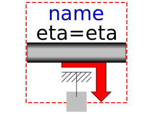

Library to model 1-dimensional, rotational mechanical systems
| Name | Description |
|---|---|
| Connectors and partial models for 1D rotational mechanical components | |
| Constants and types with choices, especially to build menus | |
|  GearEfficiency | Obsolete model. Use Modelica.Mechanics.Rotational.Components.LossyGear instead |
| Obsolete model. Use Modelica.Mechanics.Rotational.Components.Gearbox instead |